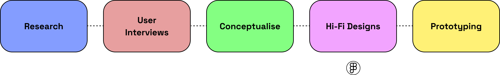
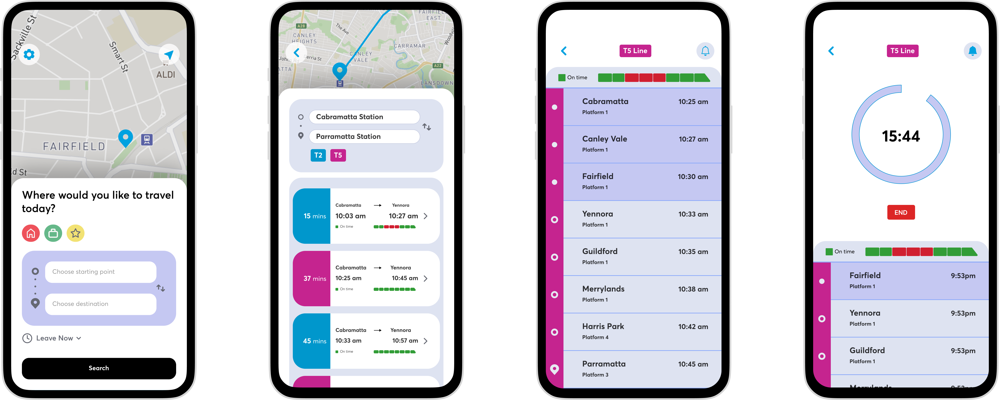

Role: UX/UI Designer
Timeline: 1 Week (October 2022)
Tools: Figma
Brief
Have you ever tried to take a short nap on the train only to wake up and find yourself at the end of the line? How can you help passengers wake up just before the train arrives at their station?
The question was posed by UX challenge that would allow me to create personal comprehensive UX design case study.
Design Process
Research
To grasp a better understanding of the brief, I conducted research on the relationship of trains and naps, the effects of alarms, and the best methods to awaken users from naps. These were some of the areas I wanted to research as I believed it would identify potential solutions for the brief.
Study participants, from an article by Stieg, C. 2020, revealed that when they woke up to a melodic song they had lower levels of morning grogginess than those who chose a beeping sound, according to the study findings. Train goers who awake suddenly from a nap are usually in an frantic mode that could result in rushing or frustations in mornings. I wanted to understand the best method of nudging train goers of their destination if they had fallen asleep.
An article by RMIT in 2022 illustrated a question and answer, “Is there such a thing as the perfect alarm tone?” The research explored how qualities of music, and specifically melody, played a role in encouraging alert wakefulness. It was revealed that the method in which people interpreted their alarms’ “tunefulness” also mirrored how groggy they felt after waking. People who used alarms that carried a tune that they would readily hum along to would experience less grogginess in comparison to the standard beeping alarms. Other studies have also showcased popular music (which can be interpreted as being melodic) was good to counteract sleep inertia after a short nap, and even more yet if it is music the listener personally enjoys.
An article by O’Malley, K. (2017) revealed that one of the reasons why commuters are able to sleep and wake up at the right time is due to routine. It was also suggested that commuters are able to wake up because they're still hearing the announcements of stops even during sleep. It was also recommended that, beside making a routine by getting on public transport the same time each time, setting a phone alarm for approximately three minutes before your stop (Google Now’s alarm) would reduce grogginess and provide a space of time to allow individuals to prepare themselves to leave.
There are some current train apps that offer functions that assist users to wake up. However, the issue with phone apps waking users up for train stops, according to Evans, L. (2013), is the usefulness of the app. Train naps are often unplanned events and other instances can be drunkenness.
Existing Solutions
I carried out further research on existing solutions addresses the problem area and identified its strengths and weaknesses.
Google Now
Google Now was a feature of Google Search of the Google app. The feature proactively supplied information to users to predict information they may need. If users open Google Now while using public transportation, the app provides the option to set an alarm to wake the user up when they arrive at a saved location, such as home or work.
- Pros: Google Now offers transit arrival times and alarms.
- Cons: Some subways have no service and sometimes trains are late which could cause the app to not operate properly.
MetroNap
MetroNap App is a mobile phone app designed to detect if a train is moving or not and when a user has reached a stop. MetroNap App will alert users when they are about to arrive at a destination by vibrating, waking them up from their nap.
- Pros: Able to detect if the train is moving or at a stop and offers a gentle method of waking users up.
- Cons: Built only for Android and created for only New York's subway.
OmniBuzz
OmniBuzz is an app that sets location-based alarms that is easy to use. It allows users to get alarms for buses through vibrations and noises as users near their destination.
- Pros: OmnniBuzz's interface and functionality is simple to use.
- Cons: Does not work well underground areas due to lack of GPS signal and continued use of GPS running in the background can dramatically decrease battery life.
Stop Here
Stop Here warns users when they are approaching a stop through using a combination of GPS and user alerts. It is designed to help the vision and hearing-impaired.
- Pros: Designed to help the vision and hearing-impaired.
- Cons: It drains phones faster as the GPS is kept active while the app runs.
TravAlert
TravAlert works by sending a GPS ping every X number of seconds to determine the user's location relative to their final destination. Users can enter whether they are on a bus or on a train and their destination into the app.
- Pros: Phone battery life lasts longer as an optimised algorithm was created for the GPS to ping efficiently depending on where the user is in the travelling process.
- Cons: Outdated UI.
User Interviews
A group of 3 people were interviewed on their experience of napping on trains and the methods they used to ensure they do not miss their stops.
First Interview
“I usually put an alarm 5 to 10 minutes before my stop if I want to nap but even when I wake up, I struggle to stay awake.”
“Once I accidentally fell asleep and missed my stop, I only woke up because I heard the wrong announcement.”
“If I go on the same train, I just wake up naturally if I nap.”
“I always use TripView to see my trains even if I know the times. It’s just a habit plus I like to check delays or if platform changes.”
Second Interview
“I just put an alarm if I fall asleep.”
Third Interview
“I don’t nap at all."
Personas
Based off the research and user interviews, I created personas for the target audience for the potential solution.
Storyboard
Storyboards were designed for scenarios where a potential solution would be required.

Conceptualise
Crazy8s
Crazy8s exercise was completed to ideate potential ideas to solve the problem area. 8 rough sketches for ideas were drawn.
Feedback about Crazy8s
- People usually don’t sleep in Ubers or on buses.
- Simple to use, no need to track location.
- Progress bar looks nice to track sleep.
Interviews revealed that the 4th, 6th and 8th ideas appeared most interesting. The feedback allowed me to improve the ideas by prioritising the main functions of the app. The criteria of the solution had to; focus on train rides, be simple to use, offer options for different alerts for users, and to not waste battery life.
Inspiration / Moodboard
Further research for inspiration was conducted to showcase a moodboard for the solution.
Solution
To address the problem area, the target audience was identified to be workers who frequently use trains as a mode of transport. These workers could include corporate employees, tradesmen, nurses and more. The app had to be simple to use yet informative with a quick user journey. The solution that was designed is Traverse.
Traverse: Simple Train Trips
Traverse aims to incorporate Sydney's train timetables with functions to allow them to stay awake if they actually nap. The UI was took inspiration from Sydney's current transportation timetable app called, 'TripView'. However users found some of TripView's functions hidden, such as favouriting trips and using alerts. The design goals of Traverse is to be easy to navigate, simple yet informative.
The timer was implemented as user interviews for Crazy8s thought it would be a great function. The default alert for Traverse is a subtle vibration that gradually builds from the stop before the user's destination to the destination and/or 5, 3 and 1 minute(s) before they arrive to their destination. Users can also opt to use a noise as an alert as well. To reduce battery usage, Traverse uses an optimised algorithm to ping efficiently depending on where the user is in the travelling process (every few minutes). If users have no access to GPS, due to unforeseen circumstances such as being underground, the app will utilise the time the trip is meant to end and ping based on that.
Prototype
A high-fidelity prototype of Traverse was created to showcase the main functionalities of the timetable and alert system.